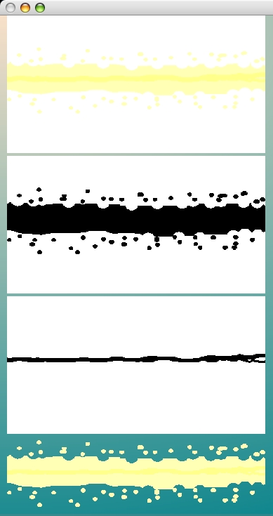

Our laser beam drawing has four colors. The background color of white is one of the four. There's also a very light yellow color that's furthest from the center of the beam. And then there's a soft yellow color that surrounds the center beam and has some of the "splatter". The fourth color is the center beam itself.
For us to use the form we'll have to ignore the very faint yellow section, for now. We'll need to draw the yellow and pale-yellow sections on cells. To do this we will need to extract mask forms for the 2 colored sections. Let's go about figuring out how to make those masks.
If you can, clear off a lot of space on the left side of your Squeak window and open up a tall Workspace window along the right side. We'll start experimenting with creating mask forms by typing and executing code in this workspace. The forms and masks we will create as a result will be drawn on the left side of the Squeak world. Here's the contents of the completed workspace code. I'll just give it here all at once and we'll walk through what it's doing. When we're done we'll execute this and see the results.
LaserGameForms initializeCachedForms.
beamForm := LaserGameForms laserBeam.
splatterForm := Form extent: beamForm extent depth: beamForm depth.
centerForm := Form extent: beamForm extent depth: beamForm depth.
beamForm displayOn: splatterForm at: 0@0.
beamForm displayOn: centerForm at: 0@0.
color := splatterForm colorAt: 10@60.
splatterForm replaceColor: color withColor: Color white.
centerForm replaceColor: color withColor: Color white.
splatterMask := (splatterForm makeBWForm: Color white) reverse.
color := beamForm colorAt: 10@90.
centerForm replaceColor: color withColor: Color black.
centerMask := centerForm makeBWForm: Color black.
splatterForm displayAt: 10@0.
splatterMask displayAt: 10@200.
centerMask displayAt: 10@400.
color := beamForm colorAt: 10@80.
splatterMask
displayOn: Display
at: 10@560
clippingBox: Display boundingBox
rule: Form oldPaint
fillColor: color.
color := beamForm colorAt: 10@90.
centerMask
displayOn: Display
at: 10@560
clippingBox: Display boundingBox
rule: Form oldPaint
fillColor: color.
The first thing we do in our workspace is re-initialize the cached forms. I want to be sure as we experiment that we don't accidently write on the forms. This way we'll always have a fresh copy of each form.
The next step is to retreive the laser beam form from our cached forms. We then create a splatter form and a center form. The laser beam form is drawn on both the new forms. At that point all three forms are identical in content.
Next we look up the color found in the very pale yellow section of the laser beam form by extracting the color pixel at location 10@60. Using that color we replace it everywhere it's found on the two new forms with the color white. At this point the two new forms only have white backgrounds and 2 colors for the laser beam, the splatter color and center color. Both new forms are the same.
We begin our next step by creating a splatter mask form. It will be black everywhere there is any color other than white.
Before we make the center form mask we want to remove the color of the splatter pixels too. We sample the color found at location 10@90 and replace all pixels matching that color with black. We can then make a center mask.
Once we have the two masks we display the splatter form, having only the two non-white colors now. Then the splatter mask, showing black everywhere the splatter pixels will be drawn. The third form we will draw is the center mask.
Once we have the two masks we will draw our new component-based laser beam by first drawing the splatter mask again but this time using a color. We then draw the center mask again but in the same location and with another color. In both cases we sampled the colors to use from the original form.
Select the entire contents of the Workspace and execute. You should see this.
